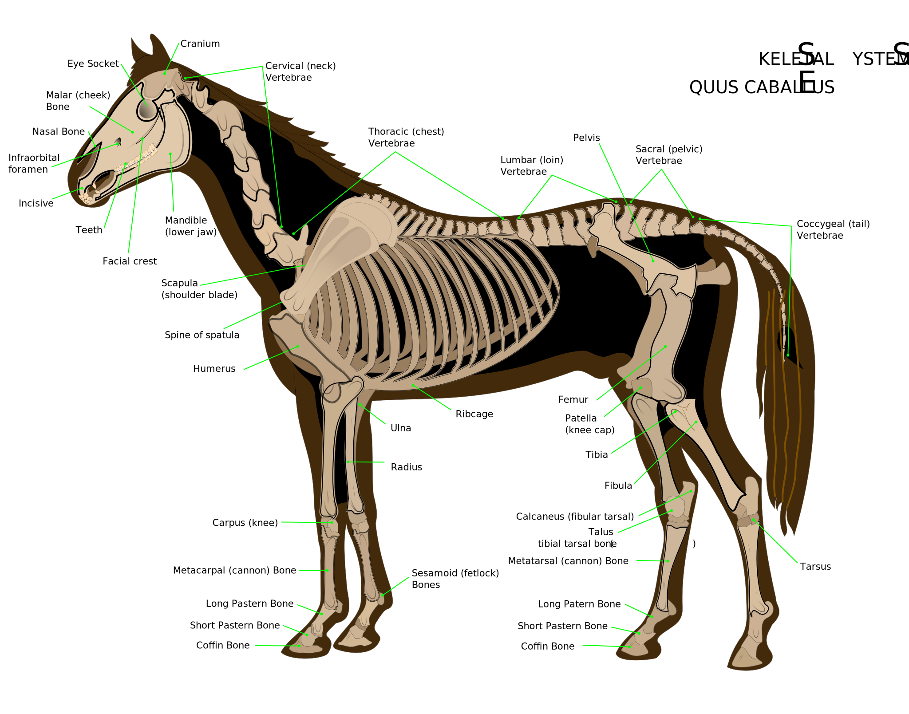

Skeletal System
The horse skeleton averages 205 bones. A significant difference between the horse skeleton and that of a human is the lack of a collarbone—the horse's forelimbs are attached to the spinal column by a powerful set of muscles, tendons, and ligaments that attach the shoulder blade to the torso. The horse's legs and hooves are also unique structures. Their leg bones are proportioned differently from those of a human. For example, the body part that is called a horse's "knee" is actually made up of the carpal bones that correspond to the human wrist. Similarly, the hock contains bones equivalent to those in the human ankle and heel. The lower leg bones of a horse correspond to the bones of the human hand or foot, and the fetlock (incorrectly called the "ankle") is actually the proximal sesamoid bones between the cannon bones (a single equivalent to the human metacarpal or metatarsal bones) and the proximal phalanges, located where one finds the "knuckles" of a human. A horse also has no muscles in its legs below the knees and hocks, only skin, hair, bone, tendons, ligaments, cartilage, and the assorted specialized tissues that make up the hoof.

Hooves
The critical importance of the feet and legs is summed up by the traditional adage, "no foot, no horse". The horse hoof begins with the distal phalanges, the equivalent of the human fingertip or tip of the toe, surrounded by cartilage and other specialized, blood-rich soft tissues such as the laminae. The exterior hoof wall and horn of the sole is made of keratin, the same material as a human fingernail. The end result is that a horse, weighing on average 500 kilograms (1,100 lb), travels on the same bones as would a human on tiptoe. For the protection of the hoof under certain conditions, some horses have horseshoes placed on their feet by a professional farrier. The hoof continually grows, and in most domesticated horses needs to be trimmed (and horseshoes reset, if used) every five to eight weeks, though the hooves of horses in the wild wear down and regrow at a rate suitable for their terrain.
Nostrils
Their sense of smell, while much better than that of humans, is not quite as good as that of a dog. It is believed to play a key role in the social interactions of horses as well as detecting other key scents in the environment. Horses have two olfactory centers. The first system is in the nostrils and nasal cavity, which analyze a wide range of odors. The second, located under the nasal cavity, are the Vomeronasal organs, also called Jacobson's organs. These have a separate nerve pathway to the brain and appear to primarily analyze pheromones.